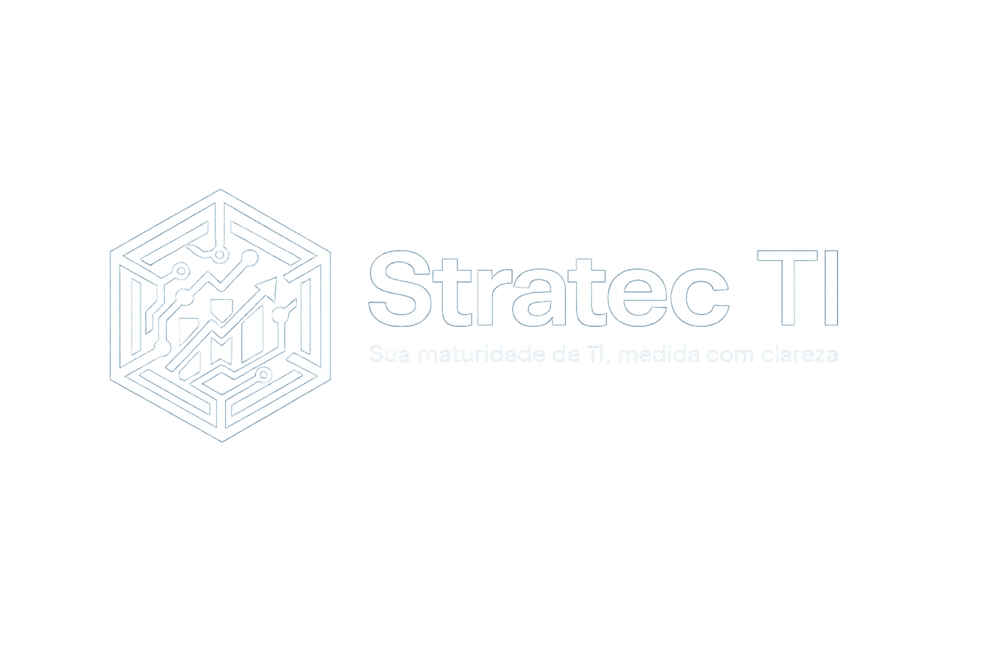

O Stratec TI ajuda empresas a medir o nível de maturidade da área de tecnologia com um diagnóstico estruturado, score por categoria, plano de ação, evidências, roadmap e recomendações executivas com base em governança, processos, segurança e valor para o negócio.

Por que avaliar a maturidade de TI?
Porque a maioria das empresas investe em tecnologia sem saber se a TI está realmente preparada para sustentar crescimento, segurança, continuidade e inovação. Diagnóstico maduro reduz riscos, melhora a operação e orienta investimentos.
Identifica vulnerabilidades em segurança, continuidade, infraestrutura e conformidade antes que virem incidentes.
Transforma percepção em score mensurável para priorizar investimentos e justificar melhorias para a direção.
Mostra o que precisa ser feito agora, depois e no longo prazo para evoluir a maturidade da TI.
Inspirado em práticas como COBIT, ITIL, ISO 38500, gestão de riscos e melhoria contínua.
A TI precisa suportar objetivos de negócio e gerar retorno real.
Controles, continuidade, proteção de dados e resposta a incidentes.
Padronização, SLAs, incidentes, mudanças, catálogo e governança operacional.
Capacitação, indicadores, ownership, accountability e cultura orientada a melhoria.
O sistema não entrega apenas uma nota. Ele interpreta vulnerabilidades por categoria, gera recomendações específicas por pergunta, consolida evidências e cruza o resultado com um plano de evolução acionável.